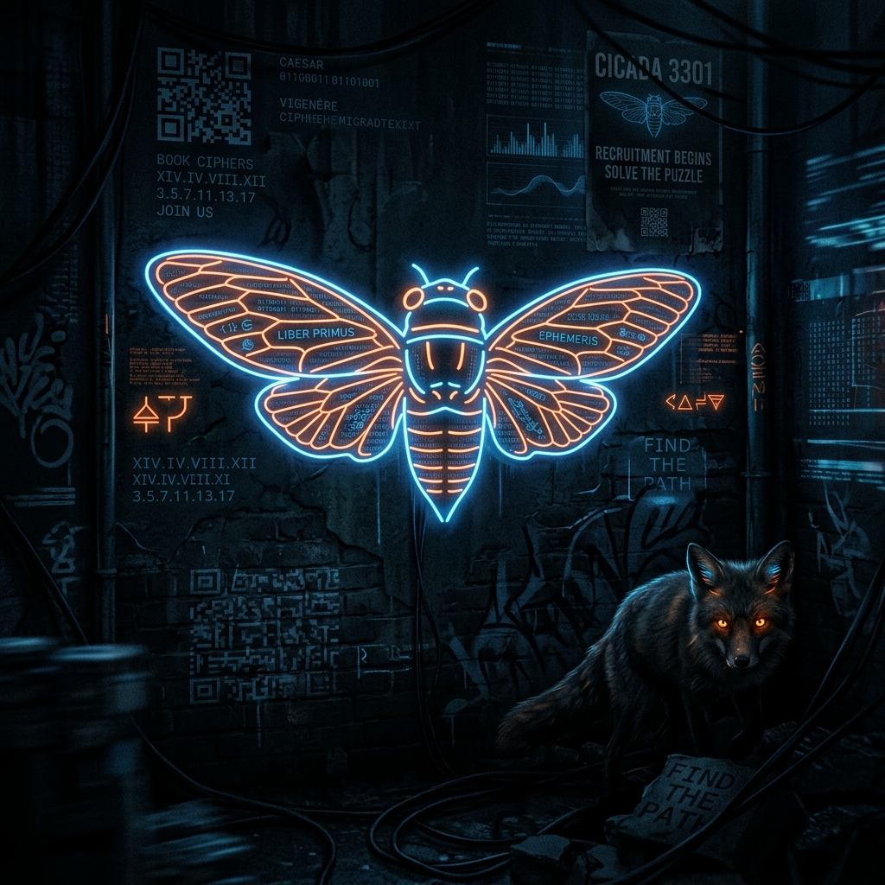

5 Surprising Truths Behind the Internet’s Most Elaborate Mystery
On an anonymous image board defined by digital chaos and nihilistic noise, a single, quiet post appeared. It wasn't a threat or an advertisement. It was an image—white text on a black background—carrying a chillingly direct command: "We are looking for highly intelligent individuals."
The message claimed a secret was hidden within the image itself. What began as a curiosity for a few thousand users rapidly evolved into what many call the most elaborate mystery of the internet age. To understand Cicada 3301, we must look past the complex cryptography and into the strange, counter-intuitive reality of the organization behind the butterfly. Solvers quickly realized this wasn't the work of a script kiddie; the professional clinicality suggested a meticulously architected operation.
For the first few days, Cicada 3301 felt like a standard digital puzzle. Solvers utilized OutGuess, a specific steganography tool, to uncover hidden data in images. But the trail soon required more than just software. It demanded investigative persistence.
The digital clues led to a phone number in Austin, Texas. Those who called heard a recorded voice instructing them to find three prime numbers associated with the original image. One was 331; the others, 509 and 503, were the pixel dimensions of the image itself. Multiplying these revealed a URL, which eventually spawned a list of GPS coordinates.
The coordinates weren't for digital addresses; they were physical locations. Fourteen sites across five different countries were listed, including Warsaw, Sydney, Seoul, Paris, and Austin. At these real-world intersections, solvers found physical posters featuring the black cicada logo and a QR code. This was the moment the mystery escaped the screen, transforming a challenge into a feeling of global surveillance.
The public and the media quickly speculated that Cicada 3301 was a recruitment front for the CIA, NSA, or a cyber-mercenary group. However, the organization’s own "Declaration" and "Founder’s Statement"—reaffirmed as recently as March 3, 2023—tell a different story.
They explicitly denied being a secret society or a government tool. Instead, they defined themselves as "engineers of renaissance" focused on privacy, creativity, history, and philosophy. They claimed to be a collection of bards and artists seeking to provide beauty and art for the world.
"Rather, we are a renaissance, a flowering of mankind, a re-cloaking of privacy for the common person."
The group emphasized that they were neurodiversity-affirming and strictly non-political, focusing on the "interior renaissance" of the human mind rather than institutional power.
In the early stages, the "hive mind" of the internet worked together to crack the ciphers. This collaboration was short-lived. Cicada viewed the crowd with suspicion, and the transition began at the physical posters. When the QR codes were scanned, solvers were met with a warning: "We want the best, not the followers."
This signaled the start of a "psychological isolation" phase. To filter out the "followers," Cicada moved the survivors to the Dark Web. Solvers were required to create unique, sterile email addresses. From there, Cicada issued unique RSA-encrypted keys to individual participants.
Every solver was now on a different path. Sharing progress or asking for help resulted in immediate expulsion. This transformed a community of collaborators into a group of isolated competitors, forced to stare into the digital abyss alone.
As the puzzles progressed into 2014, the focus shifted toward the Liber Primus—a book written in runes. This was a manifesto masquerading as a code. The deeper solvers went into the book, the more they encountered a philosophy centered on "identity death" and the "shedding of the self."
The organization argued that maturity and enlightenment could only be reached by moving past "juvenile narcissism." The goal of the pilgrimage was to minimize the self in favor of a new, remade ideology.
Thomas A. Schoenberger, in a 2023 statement regarding the group's intent, explained:
"We have used ciphers, steganography, riddles and illusions to take the pilgrim on a journey with the objective of minimizing the importance of ego - because we feel that ego is exactly the problem in today's world."
What happened to those who actually "won"? A solver who reached the so-called "inner sanctum" described a reality that stood in stark contrast to the grand promise of enlightenment.
Solvers expected to find a "council of gods"—a hidden order of geniuses shaping the future. Instead, they found what they described as a "paranoid cage." The inner circle was composed of individuals who were socially broken and cripplingly suspicious of one another.
Rather than a throne of wisdom, the "winners" found a group where focus had turned inward—a "snake eating its own tail." The irony was profound: a group dedicated to the "flowering of mankind" had created an environment defined by intense control and crippling secrecy.
The trail of Cicada 3301 has largely gone cold. The last verified PGP-signed message appeared in 2017, and the Liber Primus remains mostly unsolved. However, some believe the organization hasn't truly disappeared.
The "emergent protocol" theory suggests that Cicada might not be a traditional group of people at all. Instead, it is viewed as a "ghost in the machine"—a self-generated immune system for the internet. In this view, Cicada is a dormant function that reacts only when the digital world is "infected" by censorship and overreaching control.
If this theory holds, Cicada 3301 hasn't ended. It is simply sleeping underground, waiting for the next time the digital balance shifts too far. Whether the mystery is over or merely resting, one question remains: when the next message appears, will you take the bait?